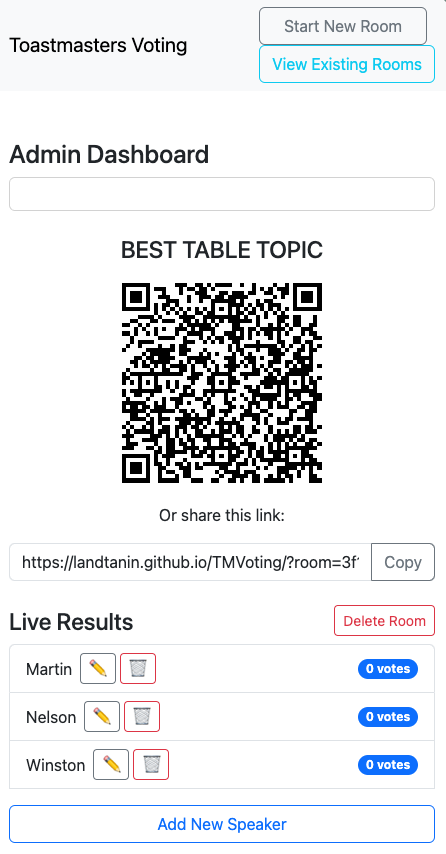

Admin Views Overview:
- Room Creation: The initial screen where you choose the voting category and add speaker names to start a new voting session.
- Room Details & Results: Shown after creating or loading a room. Displays the QR code/link for voters, live vote results, and provides options to manage speakers (add/edit/delete) or delete the entire room.
- View Existing Rooms: Accessed via "View Existing Rooms", this shows a list of all past rooms. You can load an existing room's details or delete rooms from here.
How to Create a New Voting Room

- Click "Start New Room" on top right
- Select voting category
- Add speakers
- Click "Create Voting Room"
- The QR code and live results will appear. The room is also added to the "Existing Rooms" list.
Room Details & Results
This view appears automatically after creating a new room or loading one from the "View Existing Rooms" section. It's the hub for managing an active session.
- Sharing Options:
- Displays a QR Code and a direct voting link for participants.
- Includes a "Copy" button to easily grab the link.
- Live Results & Management:
- Shows speakers and their current vote counts.
- The results update automatically every few seconds.
- Speaker Management Actions:
- Edit Name: Click the pencil icon (✏️) next to a speaker.
- Delete Speaker: Click the trash can icon (üóëÔ∏è) next to a speaker (removes speaker and votes).
- Add Speaker: Use the "Add New Speaker" button located below the results list.
- Delete Room: Use the "Delete Room" button located at the top-right of the results section to remove the entire session permanently (requires confirmation).
Viewing Existing Rooms
- Click the "View Existing Rooms" button located in the top-right navigation bar.
- This will display a list of all previously created voting rooms.
- Each room card shows:
- The Voting Category
- Comma-separated Speaker Names
- Total number of Votes received
- The date the room was Created
- You can click on a room card to load its details and view live results (see "Room Details & Results" section).
- You can also click the "Delete" button on a card to permanently remove that room.